In this assignment, I implemented the algorithms to make a basic ray tracer! In Part 1 I generated rays and implemented how they intersect with objects in the scene. In Part 2 I made a BVH accelerator so that ray intersections could happen in a fraction of the time. In Part 3 I implemented the code to represent the DiffuseBDSF material and also implemented basic direct illumination. In Part 4 I made a way to sample the DiffuseBDSF and used that to implement global illumination. In Part 5 I implemented adatpive sampling so that each pixel we sample converges so that we output images with no noise.
Part 1: Ray Generation and Intersection
Describe what you did in Part 1.
In Part 1 I set up a camera and an image sensor that corresponds to an output image so that I could generate pixel samples by generating a ray that goes through each location on the sensor and updating it's corresponding pixel location on the output image. After that, I coded intersection tests for ray-tringle intersections and ray-sphere intersections so that we could visualize meshes made of spheres and triangles in our scene.
Walk through the ray generation and primitive intersection parts of the rendering pipeline.
To generate a ray, we make a sensor in our 3D scence that corresponds to our output image. we then set up a camera to point at the sensor. After this, we trace a ray from the camera throught the sensor and update the pixel the ray intersects with in the output image based on some value. At first we make this value to be a debugging color based on the direction of the camera ray. This involves converting between image space and camera space. We then change the debugging color to be based on the normals of intersected object. I implemented ray-triangle intersection and ray-sphere intersection. How this works is that we trace a ray from the camera, through the sensor, and into the scene. If the ray intersects with an object we calculate its normal and use barycentric coordinates (triangle) or analytics (sphere) to color pixels in a way that the objects in the scene look smooth.
Explain the triangle intersection algorithm you implemented in your own words.
To implement ray-triangle intersection, I implemented the Möller–Trumbore algorithm. I found this youtube video helpful (https://www.youtube.com/watch?v=fK1RPmF_zjQ). This algorithm essentially uses points on the triange and the ray to find the intersection point's barycentric coordinates on the triangle. We essentially use points on the triangle to find edges on the triangle, edges and the ray to find the determinant, return if the ray lies in the plane of the triangle based on the determinant, then use the inverse determinant and calculatons between geometries found from the edges and ray to find the barysection coordinates of the intersection point. If the barycentric coordinates are outside of the triangle or if the intersection t (time) is out of bounds we return. We then fill an intersection object with the normal that we calculate by using the barycentric coordinates.
Show images with normal shading for a few small .dae files.
|
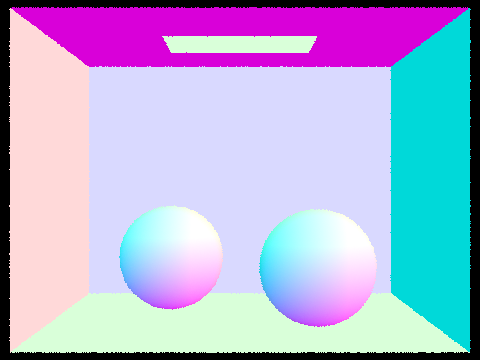
|

|
|
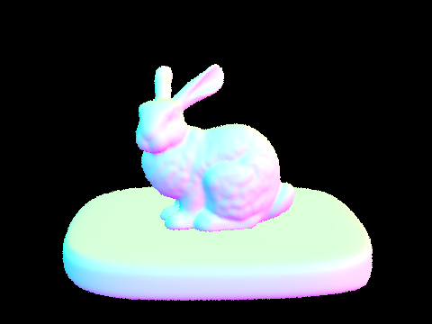
|
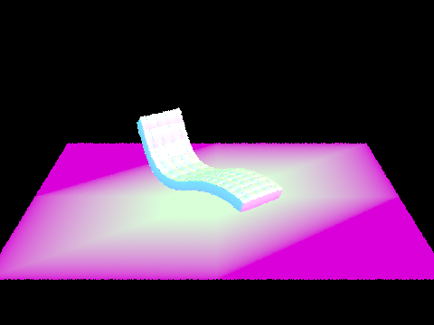
|
Part 2: Bounding Volume Hierarchy
Describe what you did in Part 2.
In Part 2, I implemented a Bounding Volume Hierarchy (BVH) to speed up render times. First, I partitioned all the primitives in the scene into a binary tree so we could test intersections with the bounding box of smaller and smaller nodes in the scene before testing the intersection of a primitive. I then implemented the code necessary to intersect one of these bounding boxes. Finally, I completed the BVH Acceleration by writing the recursive algorithm that preforms intersection tests on a ray and bounding boxes before it checks if the ray intersects with primitives that are partitioned into that node. Together this brings the complexity of ray intersection down from O(n) to O(log(n)).
Walk through your BVH construction algorithm. Explain the heuristic you chose for picking the splitting point.
For my BVH construction algorithm I used recursion. At the start of each recursive call, I create a root node, create an AABB box bounding every object in the scene, assign the AABB box to the root node, find the AABB longest axis and sort each object along this direction, find a (split index) midpoint that divides the bounding box, then divide the scene into two sides using the split index. After this I recursively call this function on the node's left side and the node's right side so we end up with well spaced out primitive partitions in each node. To choose a splitting point, I found it most practical to sort the list of primitives based on their location in the longest direction they span, then just choose the split point to be the middle of the list. This required me to use std::sort() and make my own comparison structs to sort in each direction.
Show images with normal shading for a few large .dae files that you can only render with BVH acceleration.
|
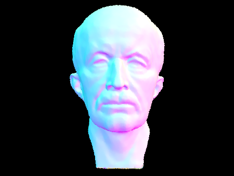
|
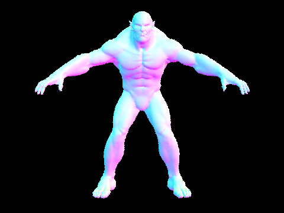
|
|
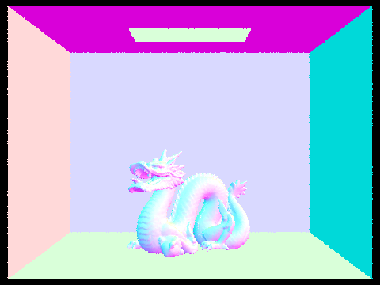
|
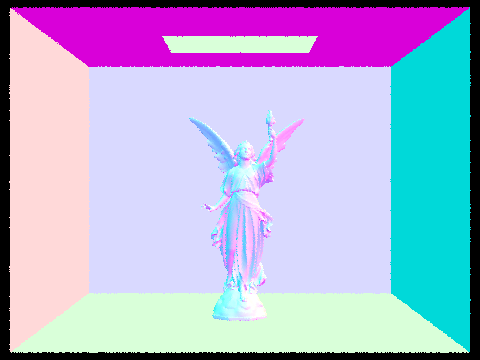
|
Compare rendering times on a few scenes with moderately complex geometries with and without BVH acceleration. Present your results in a one-paragraph analysis.
I tested CBlucy.dae, CBdragon.dae, beast.dae, and CBspheres with and without BVH acceleration.
CBlucy.dae went from having a render time of 269.3629s to a render time of 0.0313s after BVH Acceleration (a 8605.84345048 times speedup).
Before speedup it traced 347366 rays with an average speed of 0.0013 million rays per second and an average of 34173.885409 intersection tests per ray.
After speedup it traced 98692 rays with an average speed of 3.1481 million rays per second and an average of 10.204231 intersection tests per ray.
CBdragon.dae went from having a render time of 212.2512s to a render time of 0.0356s after BVH Acceleration (a 5962.11235955 times speedup).
Before speedup it traced 348424 rays with an average speed of 0.0016 million rays per second and an average of 31973.541820 intersection tests per ray.
After speedup it traced 96604 rays with an average speed of 2.7173 million rays per second and an average of 11.202072 intersection tests per ray.
beast.dae went from having a render time of 81.2201s to a render time of 0.0228s after BVH Acceleration (a 3562.28508772 times speedup).
Before speedup it traced 299422 rays with an average speed of 0.0037 million rays per second and an average of 14616.617543 intersection tests per ray.
After speedup it traced 86243 rays with an average speed of 3.7908 million rays per second and an average of 7.237063 intersection tests per ray.
CBspheres.dae went from having a render time of 0.0301s to a render time of 0.0332s after BVH Acceleration (a 0.90662650602 times speedup).
Before speedup it traced 59423 rays with an average speed of 1.9745 million rays per second and an average of 8.802602 intersection tests per ray.
After speedup it traced 67637 rays with an average speed of 2.0383 million rays per second and an average of 6.583956 intersection tests per ray.
It seems that the more complex a mesh gets, the more it benefits from BVH acceleration. We can directly see this in our examples.
From CBlucy.dae, to CBdragon.dae, to beast.dae, to CBspheres.dae, we can see that render time speedup slows as mesh complexity gets more simple.
We can also see that the average speed increase after accelerating is greater in complex meshes as opposed to simple meshes.
We can also see that the number of rays traced decrease after acceleration if the mesh is complex enough.
This property checks out with the intention to use BVH acceleration to reduce ray intersection from O(n) to O(log(n)).
What was interesting to me was that simple meshes, such as CBspheres could see a slow-down after implementing BVH acceleration. This is likeley
because the time it takes to recurse the BVHAccel takes outweighs the speedup. We can most easily see this in the number of rays traced before and
after BVH acceleration. CBspheres went from tracing 59423 rays to tracing 67637 rays after speedup, so there must be a turning point in mesh
complexity where BVH acceleration becomes worth the speedup.
Part 3: Direct Illumination
Describe what you did in Part 3.
In Part 3, I implemented the "f" function for a Bidirection Scattering Distribution Function (BSDF) which means that I used an incoming and outgoing angle to return a value that makes it so light reflected off objects with the BSDF material are dispersed equally in all directions in the hemisphere it could bounce to. I also implemented zero-bounce illumination which are the rays of light that reach the camera without bouncing off another light first. After that I implemented direct lighting in two forms. Direct lighting is the light that falls on a scene directly from the light source (or that reaches another point on the scene after just one light bounce). The first version I implemented was Uniform Hemisphere Sampling where I used a Monte Carlo esitmator to approximate integrating over the light that arrived at a point using a reflection equation to output how much light is outgoing from that point. The second form of direct lighting I implemented was using importance sampling. This means that we sample rays that are casted from the lights in the scene to hit points on the scene directly. This way we can see the rays that lights cast even if they only emit from a single point (that othwise could have been missed by sampling the hemisphere from the hit point.
Walk through both implementations of the direct lighting function.
The first implementation of the direct lighting function I implemented was Uniform Hemisphere Sampling. To do this, I sampled radiance "num_samples"
times and added that radiance to L_out. After finishing every sample I normalized by dividing L_out by dividing by "num_samples".
To take each sample I used the HemisphereSampler, calculated its pdf using 1.0 / (2.0 * pi), tested the intersection with a
a ray from the hit point to the direction of the material we want light from. If the the incoming ray is blocked it is a shadow.
If the ray isn't a shadow we use the intersection with the material it hit to get it's radiance, and use the "f" function,
emission of the new material, and cos of the theta angle made by the light bounce as well as the pdf to find the output radiance
for that sample.
The second implementation of the direct lighting function I implemented was Importance Sampling Lights. The difference between uniform
and importance is that in importance sampling we sample lights directly rather than in uniform directions
around the hemisphere made by the ray and hit point. In this implementation, we iterate through all lights in the scene,
assign num_samples based on whether or not the light is a delta light, take num_samples at the light to
accumulate radiance, then update L_out based on this normalized accumulation. In each sample, we do the shadow ray test
between the light and the hitpoint. If the ray isn't the shadow we calculate radiance in the same way as before.
Show some images rendered with both implementations of the direct lighting function.
|
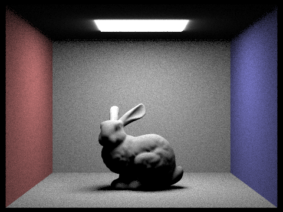
|
|
|
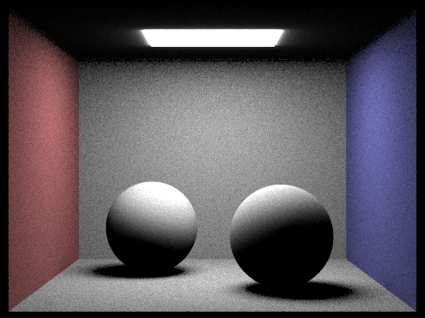
|
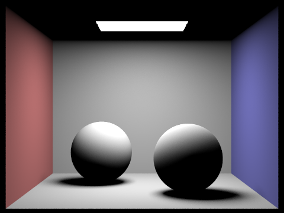
|
Focus on one particular scene with at least one area light and compare the noise levels in soft shadows when rendering with 1, 4, 16, and 64 light rays (the -l flag) and with 1 sample per pixel (the -s flag) using light sampling, not uniform hemisphere sampling.
Below is CBbunny.dae traced with different levels of light rays
|
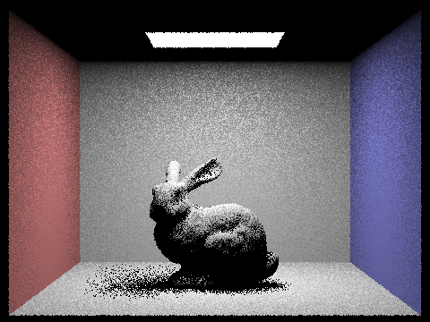
|
|
|
|
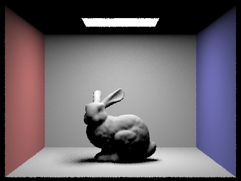
|
As we can see the noise in the images decreases as the number of light rays increases. soft shadow are terriby spotty until 64 light rays. At 64 light rays, the spots between dark shadows and light shadows especially in the bunny's shadow are still spotty. Dark shadows swwm to look good at 4 light rays and above.
Compare the results between uniform hemisphere sampling and lighting sampling in a one-paragraph analysis.
Uniform hemisphere sampling seems to be much noisier than importance sampling when it comes to shadows. As we can see in Hemisphere CBbunny, the shoft shadows on the back of the wall are grainy while the Importance sample is smooth. Hemisphere also has a nice "bloom" effect that importance doesn't have. You could see this if you compare the blur around Hemisphere CBbunny and Hemisphere CBspheres_lambertian to their importance counterparts. Generally I'd say that lights look better in hemisphere sampling and objects that arent lights look better in importance sampling (better as in less high frequencies).
Part 4: Global Illumination
Describe what you did in Part 4.
In Part 4 I implemented DiffuseBSDF that samples the incoming ray as well as calculates the same thing as DiffuseBSDF::f. I then use this to implement global illumination in my ray-tracer. This is also called interect lighting, or the lighting in the scene that is not found on the zero or first bounce of a ray of light. I do this using recursion by bouncing a ray off of objects and adding the radiance found at each bounce point on top of the radiance I would've found from direct illumination.
Walk through your implementation of the indirect lighting function.
To implement the indirect lighting function, I add together zero_bounce_radiance and at_least_one_bounce_radiance. In at_least_one_bounce_radiance, I calculate the one_bounce_radiance for the current ray, then recurse throught the rays that are made when that ray bounces off of intersections. If the depth of the ray is less than 1 I return 0, if the depth of the ray is 1 I just return the one bounce radiance. Otherwise, I calculate the fields I use the sample_f function I made to get the reflectance, cos of the theta angle, and pdf of the current ray's intersetion. I then construct the ray created from the bounce, return 0 if the cos of the theta angle isn't positive, and intersect the new ray with it's new intersection. Then I use russian roulette to decide if the current and recursive radiance should be added to the output radiance. If I do, then I use the continuation pdf made by russian roulette, pdf, recursive call to at_least_one_bounce_radiance(), f_sample function, and cos of the theta angle to get the current radience then add it to the accumulated radiance.
Show some images rendered with global (direct and indirect) illumination. Use 1024 samples per pixel.
|
|
|
|
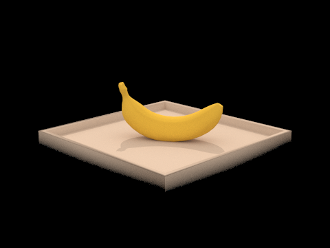
|
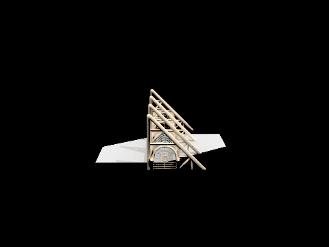
|
|
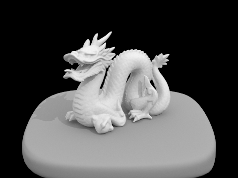
|
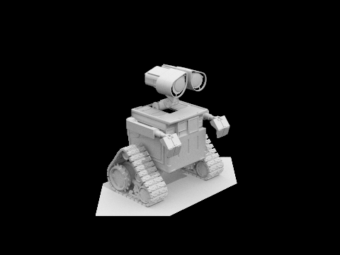
|
Pick one scene and compare rendered views first with only direct illumination, then only indirect illumination. Use 1024 samples per pixel. (You will have to edit PathTracer::at_least_one_bounce_radiance(...) in your code to generate these views.)
Below we compare direct the direct and indirect lighting for CBspheres_lambertian.
|
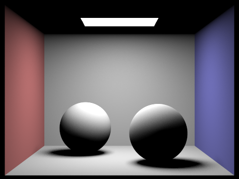
|
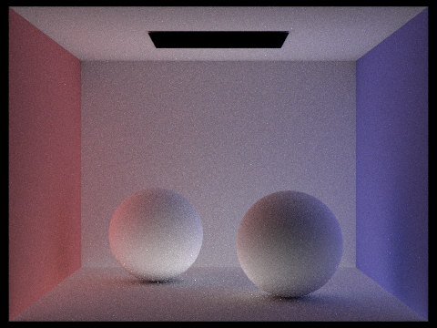
|
Below we compare direct the direct and indirect lighting for CBbunny.
|
|
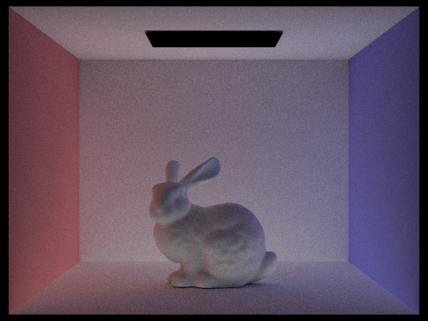
|
For CBbunny.dae, compare rendered views with max_ray_depth set to 0, 1, 2, 3, and 100 (the -m flag). Use 1024 samples per pixel.
|
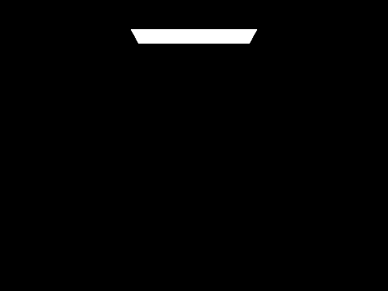
|
|
|
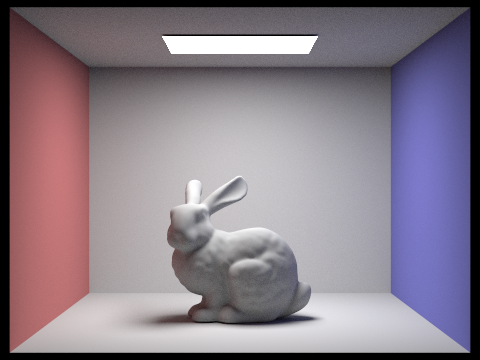
|
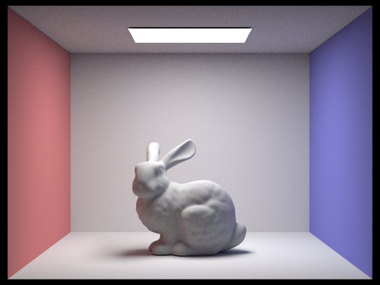
|
|
|
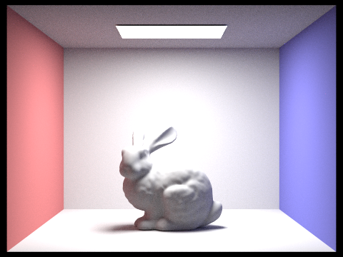
|
As we can see, as ray depth increases, there is less and less shadow. From 0 to 1, we go from
zero bounce light to a lit scene. At ray depth of 2 and above we get indirect lighting. As the
ray depth increases, soft shadows get lighter and lighter.
One of the hardest errors I debugged during this project was finding out how to eliminate the overexposure depicted by the padding-bottom
right image. The error ended up being that I added direct illumination twice (by calling one_bounce_radiance in
est_radiance_global_illumination and at_least_one_bounce_radiance at the same ray depth).
Pick one scene and compare rendered views with various sample-per-pixel rates, including at least 1, 2, 4, 8, 16, 64, and 1024. Use 4 light rays.

|
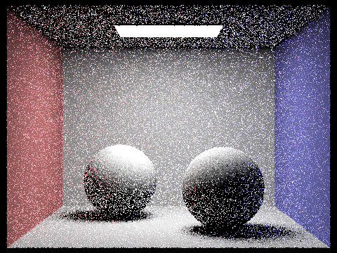
|
|
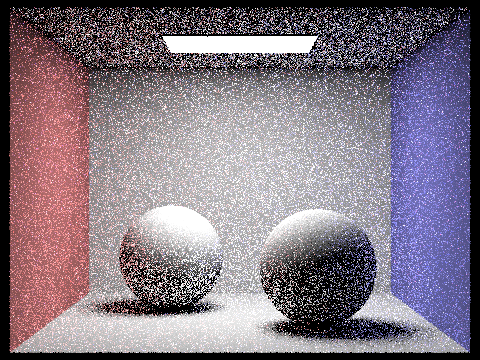
|
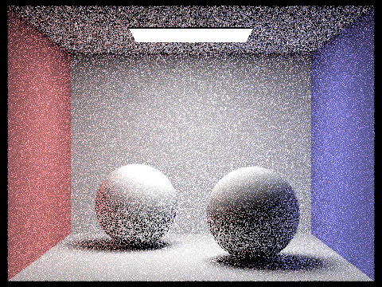
|
|
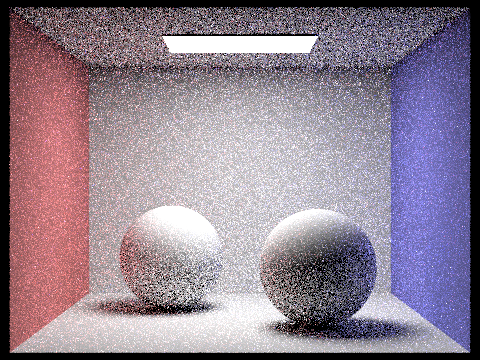
|
|
|
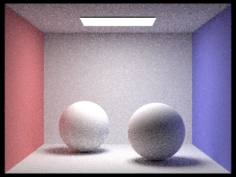
|
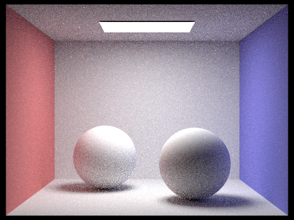
|
|
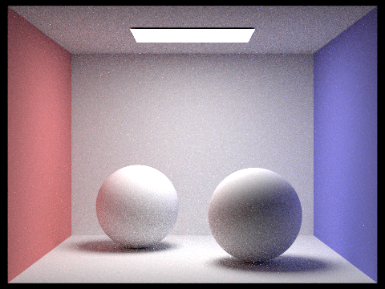
|
|
|
|
|
As we can see, increasing the sample-per-pixel rate increases the probability that a pixel converges, which means that higher sample-per-pixel rates have less noise. This noise is most easily seen by the tiny "specs" that are prominent in sample-per-pixel rates below 512. To ensure that every pixel converges, we can implement adaptive sampling (seen below).
Part 5: Adaptive Sampling
Describe what you did in Part 5.
In Part 5, I used statistics to test whether a pixel has converged when taking radiance samples. This makes it so we could eliminate noise by ensuring every pixel converges before outputting an image. This means every pixel has the potential to stop being sampled before it reaches the max number of samples, which could be used to speed up big renders. This also gives the algorithm the name "Adaptive Sampling."
Walk through your implementation of the adaptive sampling.
To implement adaptive sampling, I replaced the for loop that took num_samples samples for every pixel with one that checks for convergence every time samplesPerBatch samples are taken. To find convergence, I use radience to find illuminance, then use illuminance. Then I add x_k at each sample to s1 and x_k * x_k to s2 at each sample. This way I can use s1 and s2 when I check for convergence. I check for convergence by using s1 to find the mean, s1 and s2 to find the variance, the variance to find the standard deviation, and the standard deviation and samples so far to find I. I then break if I is less than the confidence interval (which I found using maxTolerance * mean). I then average the accumulated radiance by dividing by samples so far. I end by updating the sample buffer count by samples_so_far.
Pick one scene and render it with at least 2048 samples per pixel. Show a good sampling rate image with clearly visible differences in sampling rate over various regions and pixels. Include both your sample rate image, which shows your how your adaptive sampling changes depending on which part of the image you are rendering, and your noise-free rendered result. Use 1 sample per light and at least 5 for max ray depth.
|
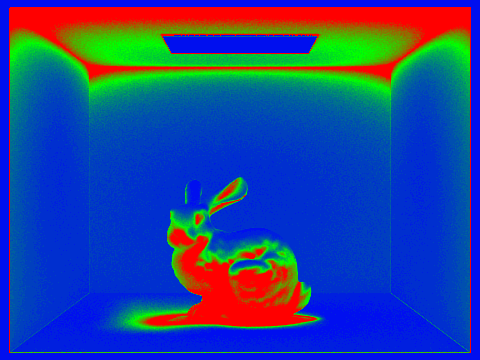
|
|
Above we can see that we can use adaptive sampling in our bunny render! As seen by the areas in red (high sample rate), the shadows that the bunny casts are very computationally intensive. Considering the previous parts of this project, this makes sense because it takes multiple bounces to start seeing light in the bunny's shadow. We can infer that places that are illuminated by global illumination or have complex geometry require high samling rates. The rest of the image follows because simple geometry such as the walls and the floor are blue (low sample rate) and the in between is green (medium sample rate).
Out of curiosity, I also rendered CBspheres_lambertian:
|
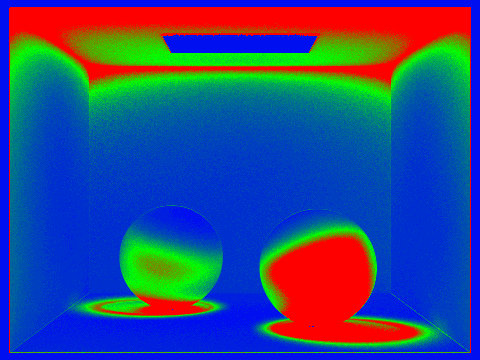
|
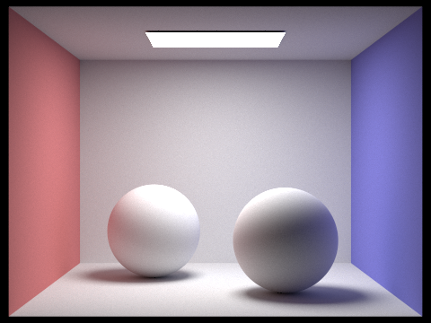
|
The website for my writeup is https://cal-cs184-student.github.io/sp22-project-webpages-ethangnibus/